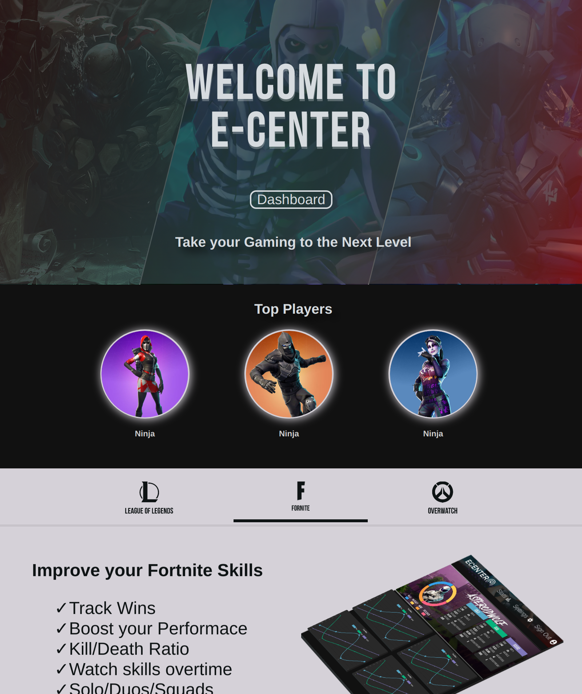

X
E-Center
Co-Founder
2019
- Image Recognition
- Data Scraping
- API Development
E-Sports Statistics Platform focused on improving player performance through informed statistics. Video Recognition technology used to analyze performance.
Clarke Computing
Freelance Developer
2016
- Brand Design
- Website Design
- Digital Marketing
Sara.ai
2018
- Machine Learning
- Artificial Intelligence
Feisty
2019
- Charting
- Statistical Methods
Smart chart rendering for large sets of data. Preserves maxes, mins and other general trends on zoom.
Quark Editor
2017
- Syntax Highlighting
- Github Integration
- Media Integration
An online IDE that allows easy editing of git repositories stored on Github.

Chatbot.js
2017
- Artificial Intelligence
- Embedded Applications
Chatbot framework for construction of intelligent agents. Can be used to offload service requests with easy to use syntax.
Smart Mirror
2018
- API Integration
- Minimal Design

E-TransControl
2017
- Microcontroller
- Hardware Programming
Auto Website
Kit builder for after-market transmission controllers and various car modificationsa.
Dingo.js Framework
2017
- Image Recognition
- Data Scraping
- API Development
Emma Buck Photography
2016
- Minimalist
- Photography
- Portfolio
μ Markup
2018
- Markup Compiler
- Stylish Formatting
A lightweight markup compiler to generate simple, stylish formatting. Support for annotations, formulaes, and tables
Low-Level-Basic
2017
- Low Level variant of Basic
- Assembly like Syntax
New Mexico Backpacking
2016
- Website for New Mexico backpacking Tours
Azulejos
2018
- Tile Based Board Game
- Animations and Effects
Stack Calc
2018
- Stack Based Calculator
- General Calculations
- Programmable Functions
Genetic.js
2019
- Genetic Algorithms
- Machine Learning
Genetic algorithm library for native JS. Easily abstract complex genetic algorithms into simple wrappers for machine learning and AI projects.
Escher
2017
- Unique Gameplay
- Custom Physics Engine
A mind-bending game built around a physics engine resembling the famous M.C. Escher's artwork.